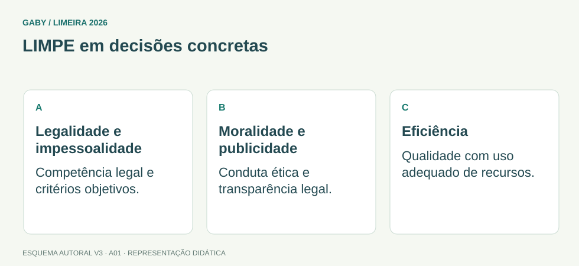

Objetivos do módulo
- Compreender os cinco princípios expressamente previstos no edital.
- Distinguir aplicação de cada princípio em situações práticas.
- Reconhecer pegadinhas que confundem legalidade, moralidade, publicidade e eficiência.
LIMPE em decisões concretas

Descrição em texto do esquema
- Legalidade e impessoalidade: Competência legal e critérios objetivos.
- Moralidade e publicidade: Conduta ética e transparência legal.
- Eficiência: Qualidade com uso adequado de recursos.
Oficina visual · aplique o esquema
Um servidor atende primeiro um conhecido, sem prioridade legal. Qual princípio é especialmente comprometido?
Atividade autoral complementar da V3. Registre sua resposta; a resolução está no arquivo de gabarito e revisão.
Mapa do conteúdo
1. Visão geral — LIMPE
O edital cobra os princípios da legalidade, impessoalidade, moralidade, publicidade e eficiência. Eles orientam a atuação administrativa e precisam ser entendidos de forma prática, não apenas decorados pela sigla.
Em questões, o enunciado costuma apresentar uma conduta e pedir qual princípio foi respeitado ou violado. A solução depende do elemento central da situação.
2. Legalidade
Na Administração Pública, o agente atua dentro das competências e autorizações previstas pelo ordenamento. A ideia não é simplesmente “fazer o que a lei não proíbe”, como se costuma dizer do particular; a atuação administrativa deve encontrar fundamento jurídico e respeitar limites.
3. Impessoalidade
Impessoalidade exige finalidade pública, tratamento sem favorecimentos pessoais e atuação atribuída ao órgão, não à promoção individual do agente. A publicidade institucional não deve ser instrumento de autopromoção.
4. Moralidade
Moralidade administrativa envolve padrões de honestidade, lealdade, boa-fé e probidade compatíveis com a função pública. Uma conduta pode parecer formalmente possível, mas ainda ser questionável se desvia de padrões éticos e de finalidade pública.
5. Publicidade e eficiência
Publicidade favorece transparência e conhecimento dos atos, ressalvadas hipóteses legítimas de sigilo. Eficiência busca resultados, qualidade, economicidade e boa utilização dos recursos. Eficiência não autoriza violar a legalidade: rapidez não legitima atalho ilegal.
| Princípio | Pergunta útil |
|---|---|
| Legalidade | há fundamento e competência? |
| Impessoalidade | há favorecimento/promoção pessoal? |
| Moralidade | a conduta é ética e leal ao interesse público? |
| Publicidade | há transparência, salvo sigilo legítimo? |
| Eficiência | recursos e processos geram resultado com qualidade? |
Exemplos resolvidos passo a passo
Exemplo 1
Situação: Um servidor acelera o processo de um amigo, ignorando a ordem normal.
Exemplo 2
Situação: Um setor digitaliza procedimento e reduz tempo de espera sem retirar controles legais.
Exemplo 3
Situação: Documento com dados legalmente sigilosos não é publicado integralmente. Isso viola publicidade?
Pegadinhas e erros frequentes
- Achar que eficiência permite descumprir regras.
- Confundir publicidade com divulgação irrestrita de qualquer dado.
- Reduzir impessoalidade apenas a “não conhecer o usuário”.
- Tratar moralidade como mera opinião pessoal.
Resumo de prova
- LIMPE: legalidade, impessoalidade, moralidade, publicidade, eficiência.
- Legalidade limita e fundamenta a atuação.
- Impessoalidade combate favorecimento e promoção pessoal.
- Moralidade exige probidade e boa-fé.
- Publicidade convive com sigilos legítimos.
- Eficiência busca bons resultados sem afastar os demais princípios.
Exercícios do módulo
Resolva sem consultar o arquivo de gabarito. As questões são autorais e construídas para treinar os conceitos do edital.
- publicidade
- continuidade
- impessoalidade
- eficiência
Fontes: Brasil — Constituição Federal, texto compilado · Brasil — Lei 13.460/2017, direitos do usuário de serviços públicos.
- hierarquia
- legalidade
- publicidade
- eficiência apenas
Fontes: Brasil — Constituição Federal, texto compilado · Brasil — Lei 13.460/2017, direitos do usuário de serviços públicos.
- eficiência
- sigilo
- pessoalidade
- arbitrariedade
Fontes: Brasil — Constituição Federal, texto compilado · Brasil — Lei 13.460/2017, direitos do usuário de serviços públicos.
- divulgação de todo dado sem exceção
- propaganda do agente
- publicar somente o que convém
- transparência dos atos, ressalvado sigilo legítimo
Fontes: Brasil — Constituição Federal, texto compilado · Brasil — Lei 13.460/2017, direitos do usuário de serviços públicos.
- arquivística
- regência
- impessoalidade
- apenas eficiência
Fontes: Brasil — Constituição Federal, texto compilado · Brasil — Lei 13.460/2017, direitos do usuário de serviços públicos.
- pontualidade
- moralidade
- publicidade apenas
- eficiência apenas
Fontes: Brasil — Constituição Federal, texto compilado · Brasil — Lei 13.460/2017, direitos do usuário de serviços públicos.
- deve coexistir com legalidade
- autoriza descumprir lei para ser rápido
- substitui todos os demais princípios
- é apenas reduzir servidores
Fontes: Brasil — Constituição Federal, texto compilado · Brasil — Lei 13.460/2017, direitos do usuário de serviços públicos.
- publicidade
- arquivística
- temporalidade
- impessoalidade
Fontes: Brasil — Constituição Federal, texto compilado · Brasil — Lei 13.460/2017, direitos do usuário de serviços públicos.
- pessoalidade
- ineficiência
- publicidade
- sigilo
Fontes: Brasil — Constituição Federal, texto compilado · Brasil — Lei 13.460/2017, direitos do usuário de serviços públicos.
- funções do Excel
- cinco princípios do edital
- tipos de arquivo
- etapas de compra
Fontes: Brasil — Constituição Federal, texto compilado · Brasil — Lei 13.460/2017, direitos do usuário de serviços públicos.
Quando terminar, abra Assistente Administrativo 01 - Princípios da Administração Pública - Gabarito e Revisão.
Checklist de domínio
- ☐ Compreender os cinco princípios expressamente previstos no edital.
- ☐ Distinguir aplicação de cada princípio em situações práticas.
- ☐ Reconhecer pegadinhas que confundem legalidade, moralidade, publicidade e eficiência.
Meta do módulo: 80% ou mais nas questões, sem depender de consulta.
Referências e conteúdos auxiliares
- Brasil — Constituição Federal, texto compiladoLeia os dispositivos indicados no módulo e suas remissões no texto oficial.
- Brasil — Lei 13.460/2017, direitos do usuário de serviços públicosParticipação, proteção e defesa dos direitos do usuário dos serviços públicos.
Referências externas de apoio consultadas para a V3 em 27/09/2026. A origem das questões é o material autoral do projeto; estes links não indicam que uma instituição publicou ou validou os exercícios. As páginas externas precisam de internet. Em informática, confira a versão do programa; em legislação, observe o recorte e as regras de atualização do edital.